所有精灵以约 2 倍游戏内尺寸显示（游戏内单位约 40-70px 高）
CC0 公有领域 · 侧视=现有渲染器直接可用 · 含真坦克/机甲/双足战车/机枪兵/爆炸
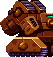
坦克 tank-unit（源:tank-unit.png 53x57）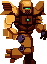
机甲 mech-unit（源:mech-unit-export1.png 47x64）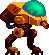
双足战车 bipedal（源:bipedal-unit.png 49x55）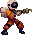
机枪兵 space-marine（源:space-marine-idle.png 32x35）CC0 公有领域 · 侧视动画帧全套(待机/移动/攻击/死亡) · 机器人自带配套弹道+命中特效 · 附科幻炮塔包
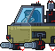
重型机甲 Mecha（62x57）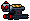
射击机器人 Droid02（30x21）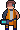
生化人 Cyborg（20x30）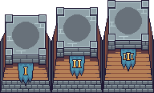
科幻炮塔 Tower01（192x116）CC-BY 4.0 需署名 · 俯视视角=需要新增沿路转向渲染 · 4 种坦克设计+履带动画
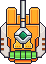
未来坦克1（46x64·俯视）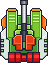
未来坦克2（48x63·俯视）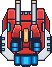
未来坦克4（52x67·俯视）